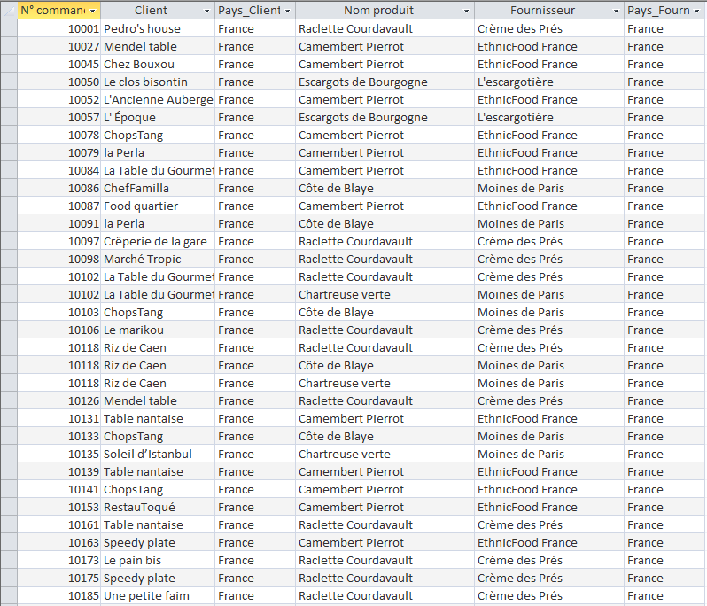
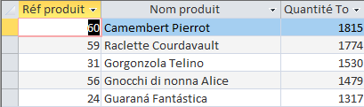
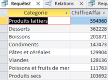
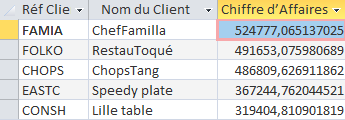

Présentation de nos indicateurs
Indicateur d'Ahmed Muhammad : Quels sont les produits dont le fournisseur est situé dans le même pays
que le client final ?
Objectif
Aider à réduire l'empreinte carbone en identifiant les ventes locales ainsi que d'économiser sur la logistique.
Intérêt de la requête :
Identifier les commandes avec lesquelles le produit n’a pas besoin de passer une frontière peut aider à
réduire l’empreinte carbone (moins de transport international),
à économiser sur la logistique et à renforcer les synergies locales.
Explication requête SQL:
Cette requête recherche toutes les commandes avec lesquelles le client et le fournisseur sont dans le
même pays.
- Les jointures relient les tables Clients, Commandes, Produits, Fournisseurs et le pays de chaque
acteur.
- Le filtre WHERE pa1.PaysFR = pa2.PaysFR sélectionne seulement les cas où le fournisseur du produit
et le client final partagent le même pays.
- Le résultat permet de repérer les ventes "locales" : ces transactions ont un impact écologique
réduit puisque le produit n'a pas été transporté à l'international.
Extrait des résultats

Code SQL
SELECT c.[N° commande], cl.Societe AS Client, pa1.PaysFR AS Pays_Client, p.NomProd AS Produit, f.Societe AS Fournisseur, pa2.PaysFR AS Pays_Fournisseur
FROM (((((Commande AS c
INNER JOIN Clientele AS cl ON c.CodeCli = cl.CodeCli)
INNER JOIN Pays AS pa1 ON cl.NoPays = pa1.NoPays)
INNER JOIN DetailCommande AS dc ON c.[N° commande] = dc.[N° commande])
INNER JOIN Produit AS p ON dc.[Réf produit] = p.RefProd)
INNER JOIN Fournisseur AS f ON p.NoFour = f.NoFour)
INNER JOIN Pays AS pa2 ON f.NoPays = pa2.NoPays
WHERE pa1.PaysFR = pa2.PaysFR
ORDER BY pa1.PaysFR, c.[N° commande];
Indicateur d'Aditya Sittiniane : Quels ont été nos 5 produits 'best-sellers' (les plus vendus en
quantité) durant toute l'année 2021 ?
Objectif :
Analyser les performances de l'année 2021 pour identifier les produits "stars" de cette période.
Cela permet aux associés d'avoir un bilan des succès passés, qui peut être comparé aux ventes de l'année
en cours pour voir si les tendances sont stables.
Intérêt de la requête :
Cette analyse rétrospective est clé pour KDou. Elle permet de confirmer le succès des produits phares de
2021.
Les associés peuvent ainsi comparer ces "gagnants" avec les ventes actuelles (par exemple, 2022)
pour voir si la popularité de ces articles perdure ou si l'offre doit être renouvelée.
Explication requête SQL:
- Jointure des tables (FROM...JOIN) : Elle connecte TROIS tables (Produit, DetailCommande, Commande)
pour pouvoir lier le nom d'un produit (table Produit) à la quantité vendue (table DetailCommande) et
à la date de la vente (table Commande).
- Filtrage (WHERE) : La condition YEAR(C.DateCde) = 2021 est le filtre principal. Elle demande à
Access de ne regarder que les lignes de commande dont l'année est 2021.
- Regroupement (GROUP BY) : La requête regroupe toutes les lignes de vente par produit (RefProd et
NomProd).
- Calcul (SUM) : Pour chaque groupe (donc pour chaque produit), elle additionne (SUM) toutes les
Quantités trouvées.
- Tri et Limite (ORDER BY / TOP 5) : Enfin, elle trie le résultat total par la quantité calculée (de
la plus haute à la plus basse, DESC) et ne conserve que les CINQ premières lignes (TOP 5).
Résultat

Code SQL
SELECT TOP 5 P.RefProd AS [Réf Produit], P.NomProd AS [Nom du Produit], SUM(DC.Quantité) AS [Quantité Totale Vendue]
FROM (Produit AS P INNER JOIN DetailCommande AS DC ON P.RefProd = DC.[Réf produit])
INNER JOIN Commande AS C ON DC.[N° commande] = C.[N° commande]
WHERE YEAR(C.DateCde) = 2021
GROUP BY P.RefProd, P.NomProd
ORDER BY SUM(DC.Quantité) DESC;
Indicateur d'Zakarya Ousahla : Analyse du chiffre d'affaires par catégorie de produits
Objectif :
L’objectif est d’identifier quelles catégories de produits génèrent le + de chiffre d’affaires pour KDou.
Intérêt de la requête :
L’intérêt de cette requête est d’aider l’entreprise à orienter ses décisions commerciales et son offre,
KDou peut optimiser sa stratégie de vente, mieux repartir son budget marketing, ajuster son stock.
Explication requête SQL :
- La jointure permet de relier TROIS tables, Catégorie pour obtenir le nom de catégorie, Produit pour savoir à quelle catégorie appartient chaque produit et DetaillCommande pour connaitre les quantités vendues de chaque produit.
Cela permet de regrouper les ventes par catégorie de produits.
- Le GROUP BY regroupe toutes les lignes de commande par catégorie de produit.
- Le (SUM) additionne les montants trouvés du calcul du chiffre d’affaires.
- ORDER BY permet de trier les résultats du chiffre d’affaires le plus haut au plus bas.
Résultat

Code SQL
SELECT C.[NomCateg] AS Categorie,Sum(VAL(DC.[Quantité]) * VAL(P.[QteParUnit])) AS ChiffreAffaires
FROM (DetailCommande AS DC INNER JOIN Produit AS P ON DC.[Réf produit] = P.RefProd) INNER JOIN Categorie AS C ON P.[CodeCateg] = C.[CodeCatg]
GROUP BY C.[NomCateg]
ORDER BY Sum(VAL(DC.[Quantité]) * VAL(P.[QteParUnit])) DESC;
Indicateur d'Alan Khiari : Quels sont les 5 clients qui ont généré le plus de chiffre d’affaires en 2021 pour la société KDouc
Objectif :
L’objectif de cette requête est d’identifier les clients qui génèrent le plus de chiffre d’affaires afin de mieux cibler les actions de fidélisation,
optimiser la relation client et allouer efficacement les ressources commerciales.
Intérêt de la requête :
Cette analyse permet à KDouc d’identifier ses clients les plus importants en termes de chiffre d’affaires.
L’entreprise peut ainsi renforcer la relation avec ces clients stratégiques par des offres personnalisées ou des avantages exclusifs.
Elle permet aussi de surveiller l’évolution du portefeuille clients d’une année sur l’autre, d’anticiper d’éventuelles pertes majeures,
et de maximiser la rentabilité des opérations commerciales.
Explication requête SQL:
- Jointure des tables (FROM…JOIN) : La requête relie quatre tables (Client, Commande, DetailCommande, Produit)
pour lier chaque client à ses commandes, relier chaque commande à ses détails, puis obtenir le prix unitaire du produit vendu.
- Filtrage (WHERE) : On ne retient que les commandes passées durant l’année 2021.
- Regroupement (GROUP BY) : Les résultats sont regroupés par client pour récapituler le chiffre d’affaires généré par chacun.
- Calcul (SUM) : Le chiffre d’affaires par client s’obtient en multipliant la quantité vendue de chaque produit par son prix unitaire
et en faisant la somme pour l’ensemble des commandes du client.
- Tri et Limite (ORDER BY / TOP 5) : Les résultats sont triés par chiffre d’affaires décroissant et seuls les cinq premiers clients sont affichés
Résultat

Code SQL
SELECT TOP 5 Cl.CodeCli AS [Réf Client], Cl.Societe AS [Nom du Client], SUM(DC.Quantité * (P.CoutAchat * (1 + Ca.CoefMarge)) * (1 - DC.[Remise (%)]) ) AS [Chiffre d’Affaires]
FROM ((((Clientele AS Cl INNER JOIN Commande AS C ON Cl.CodeCli = C.CodeCli)
INNER JOIN DetailCommande AS DC ON C.[N° commande] = DC.[N° commande])
INNER JOIN Produit AS P ON DC.[Réf produit] = P.RefProd)
INNER JOIN Categorie AS Ca ON P.CodeCateg = Ca.CodeCateg)
WHERE YEAR(C.DateCde) = 2021
GROUP BY Cl.CodeCli, Cl.Societe
ORDER BY SUM(DC.Quantité * (P.CoutAchat * (1 + Ca.CoefMarge)) * (1 - DC.[Remise (%)]) ) DESC;